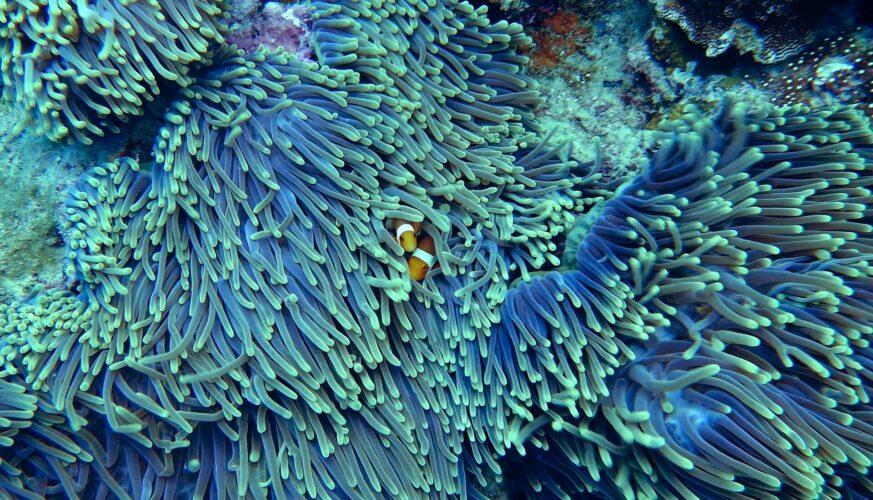

Cerca de 71% da superfície terrestre é coberta por água. Ela é o elemento primordial para o surgimento e existência da vida, e este fator caracteriza o nosso planeta como singular no sistema solar. Os oceanos e mares são responsáveis por garantir que a Terra seja um local habitável, e por isso, assegurar a preservação da vida na água é vital para a humanidade. O 14° Objetivo de Desenvolvimento Sustentável da ONU se relaciona diretamente com o anterior apresentado aqui no Blog do Espaço, pois os oceanos são responsáveis por contrabalancear a mudança global do clima.
Para além de toda a beleza natural proporcionada pela abundância de água na Terra, sua existência possui um motivo específico e fundamental: a manutenção da vida. As plantas marinhas, algas e cianobactérias também são responsáveis pela criação de oxigênio, e elas foram e ainda são parte responsáveis por bombear este elemento primordial à nossa respiração.

água é um recurso vital que sustenta a vida na Terra. A preservação dos ecossistemas aquáticos é crucial para garantir a biodiversidade e o equilíbrio ambiental. É importante que tomemos medidas para proteger nossos corpos d'água contra a poluição, a sobrepesca e outras ameaças que podem comprometer a saúde dos habitats aquáticos e das espécies que deles dependem.